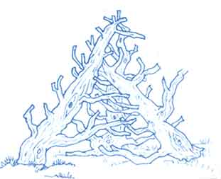

Whenever we go to the city and have a picnic in a park, our children head straight for the sets of metal climbing bars. This year, for a birthday surprise, I priced a basic set of bars made by a local welder. He told me that it would cost over $100, and that a particularly good set would run me well over $200. If you add to this the cost of transporting one of those heavy things from town to our farm, you can understand why metal climbing bars were way out of our price range.
Then, one afternoon, while pruning the orchard and having to remove two large limbs that broke off an old crab-apple tree, I thought of making my own climbing set. The children definitely needed something to exercise their muscles on, and what would be more natural than a climbing set made out of trees? Most of the trees that were still alive and growing were too large for the children, but if I could put together portions of smaller trees, it might be just right. It was.
I sawed the largest limb into two pieces. I was then able to hitch a chain to all the big pieces and pull them easily with our half-ton truck. I sawed off the weak and broken branches, making sure there were no jagged edges. Then I tried different combinations of intertwining limbs and branches until I was satisfied that the whole thing was stable, pleasing to the eye, and offered an adventure in climbing.
You need to work with at least three pieces - connecting the mostly large branches works best. I just nailed the whole thing together. (I was going to bolt it all, but I found that a few well-laced 3" common nails were just as good.)
Visitors first think we have a wood sculpture in the yard; then they see the children climbing all over it!
|
 |
|
|